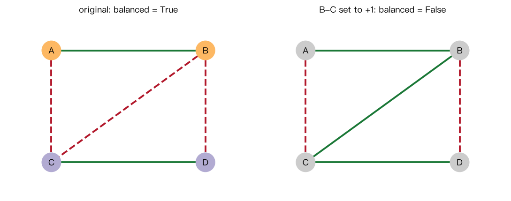

Example09 / 11
符号网络与结构平衡
一个带激活（+1）与抑制（−1）的玩具调控网络（按无向符号图检查平衡）。 结构平衡等价于：可以把节点分成两组，使组内边全为正、组间边全为负。 用广度优先搜索做“带符号的二着色”判断平衡，并列出每个环的符号（边符号之积）。 输出：第一张图平衡，分组为 {A, B} 与 {C, D}；把 B–C 改为正号后出现负环，不再平衡。
Output输出图

Output文字输出
【原网络】结构平衡？True 两组: ['A', 'B'] ['C', 'D'] 环 C–B–D 的符号 = +1 环 C–A–B 的符号 = +1 【把 B–C 改为 +1】结构平衡？False 环 C–B–D 的符号 = -1 环 C–A–B 的符号 = -1
Code代码
# 一个带激活（+1）与抑制（−1）的玩具调控网络（按无向符号图检查平衡）。
# 结构平衡等价于：可以把节点分成两组，使组内边全为正、组间边全为负。
# 用广度优先搜索做“带符号的二着色”判断平衡，并列出每个环的符号（边符号之积）。
# 输出：第一张图平衡，分组为 {A, B} 与 {C, D}；把 B–C 改为正号后出现负环，不再平衡。
import networkx as nx
from collections import deque
def balance_partition(G):
"""返回 (是否平衡, 节点到组别 0/1 的映射)。正边要求同组，负边要求异组。"""
side = {}
for s in G.nodes():
if s in side:
continue
side[s] = 0
q = deque([s])
while q:
u = q.popleft()
for v in G.neighbors(u):
want = side[u] if G[u][v]["sign"] > 0 else 1 - side[u]
if v not in side:
side[v] = want
q.append(v)
elif side[v] != want:
return False, side
return True, side
def cycle_signs(G):
out = []
for cyc in nx.cycle_basis(G):
s = 1
for i in range(len(cyc)):
s *= G[cyc[i]][cyc[(i + 1) % len(cyc)]]["sign"]
out.append((cyc, s))
return out
signed = [("A", "B", +1), ("C", "D", +1), ("A", "C", -1), ("B", "D", -1), ("B", "C", -1)]
for label, edges in [("原网络", signed),
("把 B–C 改为 +1", [e if e[:2] != ("B", "C") else ("B", "C", +1) for e in signed])]:
G = nx.Graph()
for u, v, s in edges:
G.add_edge(u, v, sign=s)
ok, side = balance_partition(G)
print("【%s】结构平衡？%s" % (label, ok))
if ok:
print(" 两组:", sorted(v for v in side if side[v] == 0), sorted(v for v in side if side[v] == 1))
for cyc, s in cycle_signs(G):
print(" 环 %s 的符号 = %+d" % ("–".join(cyc), s))
# 作图：绿色实线 = 正边，红色虚线 = 负边；平衡时节点按两组着色
import matplotlib.pyplot as plt
xy = {"A": (0, 1), "B": (1, 1), "C": (0, 0), "D": (1, 0)}
variants = [("original", signed), ("B-C set to +1", [e if e[:2] != ("B", "C") else ("B", "C", +1) for e in signed])]
fig, axes = plt.subplots(1, 2, figsize=(10, 4))
for ax, (label, edges) in zip(axes, variants):
G = nx.Graph()
for u, v, s in edges:
G.add_edge(u, v, sign=s)
ok, side = balance_partition(G)
for sgn, col, ls in [(1, "#1b7837", "-"), (-1, "#b2182b", "--")]:
nx.draw_networkx_edges(G, xy, ax=ax, edgelist=[(u, v) for u, v, s in G.edges(data="sign") if s == sgn],
edge_color=col, style=ls, width=2.5)
colors = [("#fdb863" if side.get(n) == 0 else "#b2abd2") if ok else "0.8" for n in G]
nx.draw_networkx_nodes(G, xy, ax=ax, node_color=colors, node_size=700)
nx.draw_networkx_labels(G, xy, ax=ax)
ax.set_title("%s: balanced = %s" % (label, ok)); ax.axis("off")
ax.set_xlim(-0.3, 1.3); ax.set_ylim(-0.3, 1.3)
plt.tight_layout(); plt.show()Run在浏览器中运行
首次加载 Python 环境约需 20–40 秒；可以修改参数后重新运行。